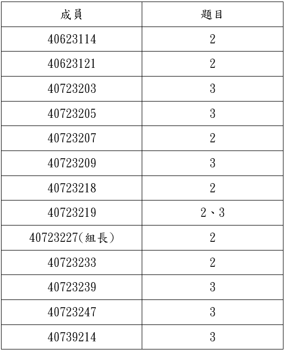

Week6~Week9 <<
Previous Next >> Week15~Week18
Week10~Week14
Week10
第三次直播會議
開會紀錄PDF連結:
https://drive.google.com/open?id=1AP49O_JYqgqQNDzEz7Pxj-tzjugL8Bb2
作業三:
根據對Topic2和Topic3的閱讀，使用CoppeliaSim、Webots、Onshape提出一個機電一體化項目。
工作分配表:

gm用戶登入設置
操作影片:
操作步驟:
1.首先git clone cd2020pj1倉儲。
2.進入Google API。
3.點選建立專案。
4.輸入專案名稱，點選建立。
5.接著點選啟用API和服務，並點選Google+ Domains API。
6.點選啟用，並點選憑證及設定同意畫面。
7.再選擇內部，並點選建立。
8.輸入名稱，接著存儲並設定憑證。
9.點選建立憑證及OAuth用戶端ID。
10.選擇網路應用程式，接著建立。
11.將ID及密碼複製到編輯器，命名為oauth_s學號.txt 並存儲在tmp下。
12.接著設定來源及URL，點選新增URL並在授權JavaScriptipt來源下輸入https://localhost:8443及授權的重新定向URL輸入https://localhost:8443/login/google/，接著存儲。
13.開啟leo，並打開cd2020pj1.leo。
14.將路徑及名稱改為自己設定的。
15.完成後存儲，並點選ROC。
16.接著輸入pip install authomatic。
17.進入pj1，打開wsgi.py，即完成。
Week11
Ubuntu設定及API連線
操作影片:
操作步驟:
1.下載vitualbox、ubuntu、CoppeliaSim四輪車控制器檔案。
2.開啟vitualbox，匯入ubuntu。
3.設定虛擬主機的網路埠號。[NET:設定->網路->附加到(A)改成NAT->進階->連接埠轉送->設定三個埠號(22、8443、19999)]。
4.設定完成後啟動ubuntu。
5.輸入密碼kmol2020，並開啟lxterminal。
6.輸入xterm&開啟，並使用ctrl+右鍵將視窗放大。
7.依照步驟打開coppeliasim，輸入ls查看內容。
8.cd coppeliasim4_rev4->ls->cd CoppeliaSim_Edu_v4_0_0_Ubuntu18_04->ls->./coppeliaSim.sh。
9.開啟後打開檔案sdc.ttt。
10.開啟啟動器，並開啟下載好的CoppeliaSim四輪車控制器檔案。
11.將檔案中的car_model.py放入編譯器中，並執行。
12.打開CoppeliaSim中的模擬，四輪車開始繞圈即成功。
以ssh對Github連線
操作影片:
操作步驟:
1.到Y槽(Data)中的portablegit將sh_for_solvespace檔案複製並修改成sh.exe。
2.開啟start_mdecourse.bat並輸入sh及ssh-keygen -t rsa -b 4096 -C "使用者學號"產生key，打上key的產生區域。
3.下載putty.7z SSH 連線工具組，利用其中的 puttygen.exe 將上述建立的 Openssh keys 轉為 putty 可以辨識的格式。
4.修改啟動的 start.bat 加入下列設定:
set GIT_HOME=%Disk%:\portablegit\bin\
set GIT_SSH=%Disk%:\putty\plink.exe
修改完成後,重新啟動。
5.將要使用 ssh 連線的倉儲 .git 中的 config 檔案中的 url 設定改為 ssh 連線格式:url = git@github.com:倉儲名稱/cad2019.git。
6.開啟 putty.exe 建立一個 session 名稱為 github.com, 其中指定 Connection -> Proxy 與 Connection -> SSH -> Auth。
7.將下列字串加入編輯器並存儲到y:\home\.ssh\config:
Host github.com
User git
Port 22
Hostname github.com
TCPKeepAlive yes
IdentitiesOnly yes
8.將所建立的OpenSSH格式的public key內容,送到Github帳號SSH settings中。
9.完成。
第四次小組會議
Week12
IPv4 Ubuntu對外連線設定操作
操作影片:
操作步驟:
1.點選檔案->喜好設定->網路->新增一個新的NAT網路。
2.編輯NAT網路->點選連接埠轉送->新增4個新的連接埠轉送埠號。
3.設定主機IP為127.0.0.1；客體IP為10.0.2.4；主機連接埠為22、19999、17443、18443；客體連接埠為22、19999、7443、8443。
4.點選設定->網路->設定主機網路為NAT Network。
5.設定完後，點選啟動，接著輸入密碼kmol2020。
6.開啟LXTermial，輸入ifconfig->輸入sudo apt install net-tools->輸入密碼kmol2020。
7.cd tmp->ls->輸入ping 127.0.0.1測試->cd cd2020pj1->git pull。
8.接著輸入sudo vi wsgi.py編輯內容，按i進行編輯。
9.將近端的host改為10.0.2.4，接著按Esc並輸入:wq存儲。
10.開啟leo，並開啟cd2020pj1.leo，點選Nav搜尋allowExt。
11.點選fileuploadfrom，並將第10行新增一個ttt檔，完成後存儲並關閉leo。
12.cd..,接著在tmp下新增oauth_scrum.txt，輸入sudo vi oauth_scrum.txt。
13.按i編輯，內容先隨便輸入，接著按Esc並輸入:wq存儲。
14.cd cd2020pj1，並輸入python3 wsgi.py啟動。
15.網址為https:/127.0.0.1:18443/alogin。
16.帳號及密碼都為admin，進入後點選fileuploadform，點選要上傳的ttt檔。
17.點選download list檢查檔案是否上傳完成。
18.完成。
第五次小組會議
W12抽點網站:http://mde.tw/cdbw12-3/
W12抽點倉儲:https://github.com/mdecourse/cdbw12-3
Week13
Bridged IPv4 遠端控制設定
W13抽點網站:http://mde.tw/cdbw13-1
W13抽點倉儲:https://github.com/mdecourse/cdbw13-1.git
Week6~Week9 <<
Previous Next >> Week15~Week18